One of the concerns we had with the data is that we would basically be looking at towns with high populations - the higher the population, the more pedestrian and cyclist accidents there would be.
We used the population data for each year to compute the rate of cyclist crashes, pedestrican crashes and total crashes per 1,000 population.
To do this, according to Numbers in the Newsroom (available here from the IRE), you take the number of crashes and divide by the population. Then multiply that number by 1000.
This way we can compare more than just the raw numbers.
Start with loading the libraries we need along with the data:
# load the libraries
library(readr)
library(ggplot2)
library(ggthemes)
#-------------------
df <- read_csv("data/all_crashData_0809.csv")## Parsed with column specification:
## cols(
## town = col_character(),
## town2 = col_character(),
## year = col_integer(),
## cycle_total = col_integer(),
## cycle_fatal = col_integer(),
## cycle_inj = col_integer(),
## ped_total = col_integer(),
## ped_fatal = col_integer(),
## ped_inj = col_integer(),
## total_crashes = col_integer(),
## total_inj = col_integer(),
## total_fatal = col_integer(),
## pop = col_number(),
## cycle_rate = col_double(),
## ped_rate = col_double(),
## total_rate = col_double()
## )Then before we get started, let’s select everything except Chicago as those totals are far higher than our surburban numbers.
df <- df[df$town != "Chicago",]So we understand, we’re looking at suburban crashes.
We’ll look at the summary, but also store the results of that summary call in a dataframe.
dfsum <- data.frame(unclass(summary(df)), check.names = FALSE, stringsAsFactors = FALSE)
dfsum## town town2 year cycle_total
## 1 Length:865 Length:865 Min. :2012 Min. : 1.000
## 2 Class :character Class :character 1st Qu.:2012 1st Qu.: 2.000
## 3 Mode :character Mode :character Median :2013 Median : 3.000
## 4 <NA> <NA> Mean :2014 Mean : 5.868
## 5 <NA> <NA> 3rd Qu.:2015 3rd Qu.: 7.000
## 6 <NA> <NA> Max. :2015 Max. :62.000
## 7 <NA> <NA> <NA> NA's :115
## cycle_fatal cycle_inj ped_total ped_fatal
## 1 Min. :0.000 Min. : 0.000 Min. : 1.000 Min. :0.0000
## 2 1st Qu.:0.000 1st Qu.: 1.000 1st Qu.: 2.000 1st Qu.:0.0000
## 3 Median :0.000 Median : 3.000 Median : 4.000 Median :0.0000
## 4 Mean :0.052 Mean : 5.592 Mean : 6.463 Mean :0.2374
## 5 3rd Qu.:0.000 3rd Qu.: 6.000 3rd Qu.: 7.000 3rd Qu.:0.0000
## 6 Max. :2.000 Max. :60.000 Max. :59.000 Max. :4.0000
## 7 NA's :115 NA's :115 NA's :90 NA's :90
## ped_inj total_crashes total_inj total_fatal
## 1 Min. : 0.000 Min. : 1.00 Min. : 0.00 Min. :0.0000
## 2 1st Qu.: 2.000 1st Qu.: 3.00 1st Qu.: 2.00 1st Qu.:0.0000
## 3 Median : 3.000 Median : 6.00 Median : 6.00 Median :0.0000
## 4 Mean : 6.048 Mean : 10.88 Mean : 10.27 Mean :0.2578
## 5 3rd Qu.: 7.000 3rd Qu.: 12.00 3rd Qu.: 11.00 3rd Qu.:0.0000
## 6 Max. :57.000 Max. :116.00 Max. :114.00 Max. :4.0000
## 7 NA's :90 <NA> <NA> <NA>
## pop cycle_rate ped_rate total_rate
## 1 Min. : 174 Min. :0.0000 Min. :0.0000 Min. :0.0400
## 2 1st Qu.: 8041 1st Qu.:0.0900 1st Qu.:0.1100 1st Qu.:0.2400
## 3 Median : 16550 Median :0.1800 Median :0.2000 Median :0.3900
## 4 Mean : 23050 Mean :0.2391 Mean :0.2873 Mean :0.5264
## 5 3rd Qu.: 28053 3rd Qu.:0.2900 3rd Qu.:0.3700 3rd Qu.:0.6300
## 6 Max. :200614 Max. :5.7500 Max. :4.8100 Max. :5.7500
## 7 <NA> <NA> <NA> <NA>Here’s a density chart on total pedestrian crashes, by year
qplot(ped_total, data=df,
geom="density",
fill = factor(year),
color = factor(year)
#alpha=I(.5)
) +
facet_grid(. ~ factor(year))## Warning: Removed 90 rows containing non-finite values (stat_density).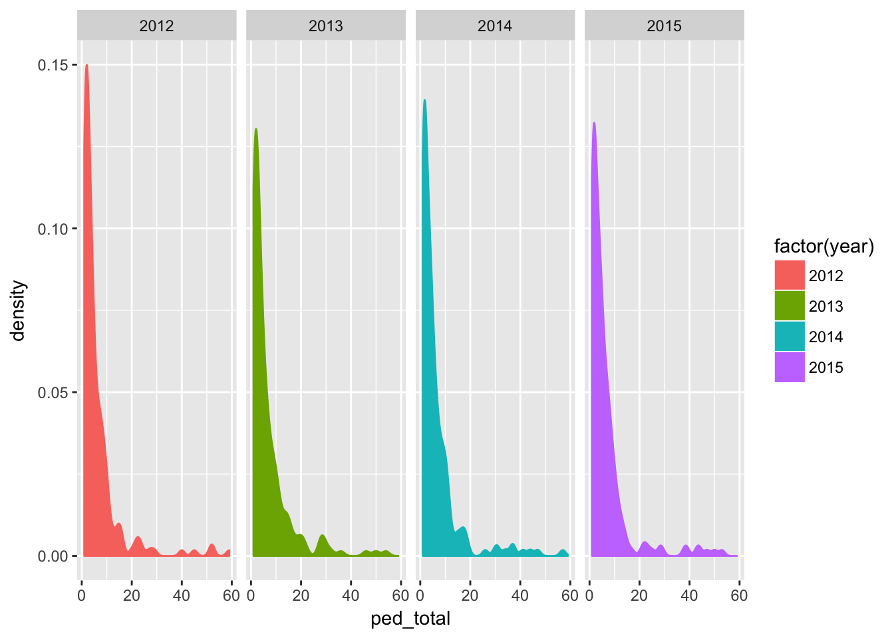
We also looked at charts for cyclist crashes and total crashes, as well as the rates for these. For the most part, the shape of the data was about the same - many places had a few amouts of each and few places had many amounts.
Let’s take a look at the data compared to total population. Here’s total cycle crashes vs. population, by year.
qplot(pop,cycle_total,
data=df,
alpha=I(.25)) +
stat_smooth(method="lm") +
facet_grid(. ~ factor(year))## Warning: Removed 115 rows containing non-finite values (stat_smooth).## Warning: Removed 115 rows containing missing values (geom_point).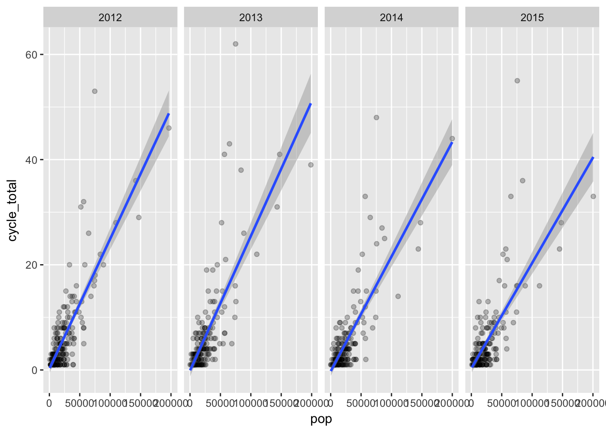
As expected, places with higher populations generally had higher numbers of cycle crashes.
But what happens when we use the rate per 1000?
qplot(pop,cycle_rate,
data=df,
alpha=I(.25)) +
stat_smooth(method="lm") +
facet_grid(. ~ factor(year))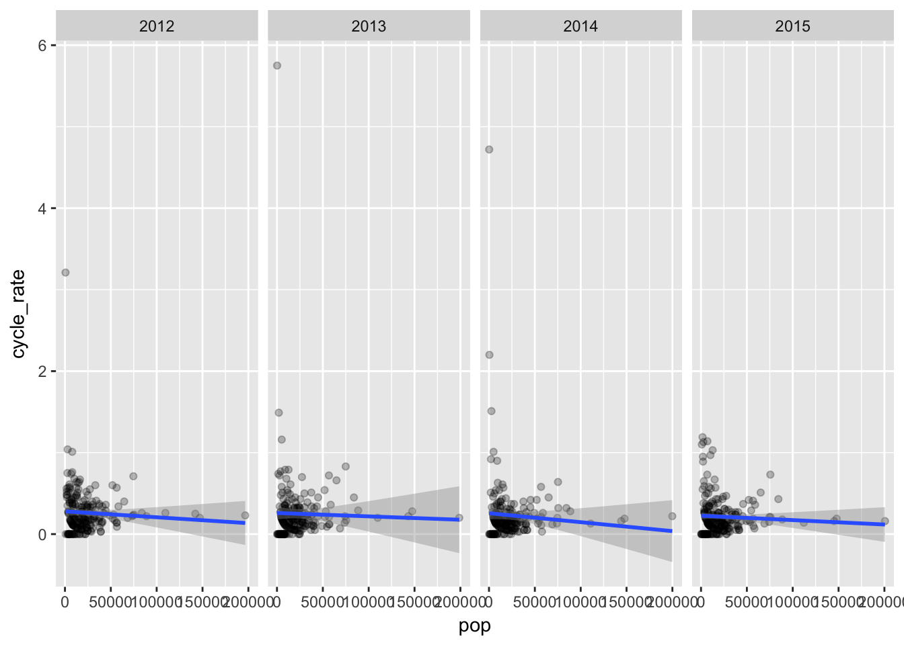
That’s a very different result. Let’s exclude rates above 2 since those are low popluation places where a single accident would throw things off.
dfa <- df[df$total_rate < 2,]
qplot(pop,cycle_rate,
data=dfa,
alpha=I(.25)) +
stat_smooth(method="lm") +
facet_grid(. ~ factor(year))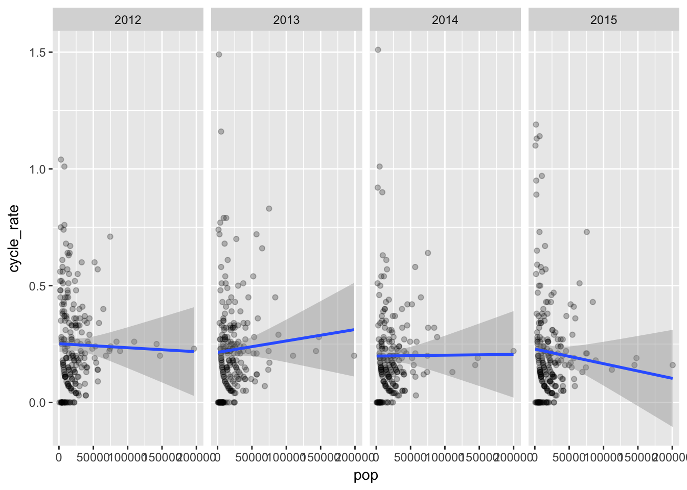
Here’s pedestrian crashes vs. pop.
qplot(pop,ped_total,
data=dfa,
alpha=I(.25)) +
stat_smooth(method="lm") +
facet_grid(. ~ factor(year))## Warning: Removed 86 rows containing non-finite values (stat_smooth).## Warning: Removed 86 rows containing missing values (geom_point).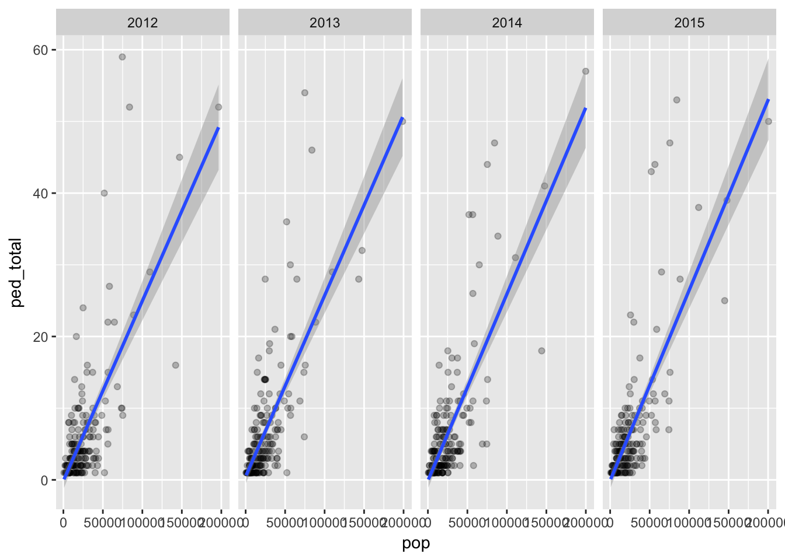
Here’s the rate 1000 for pedestrian crashes vs pop.
qplot(pop,ped_rate,
data=dfa,
alpha=I(.25)) +
stat_smooth(method="lm") +
facet_grid(. ~ factor(year))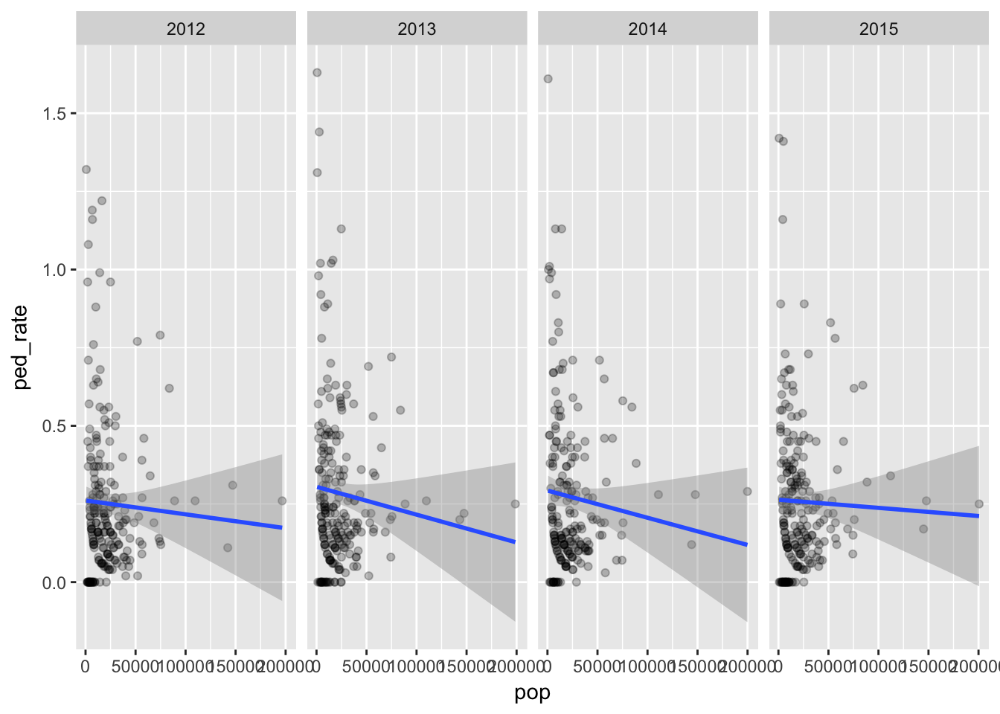
Here’s total crashes vs. pop.
qplot(pop,total_crashes,
data=dfa,
alpha=I(.25)) +
stat_smooth(method="lm") +
facet_grid(. ~ factor(year))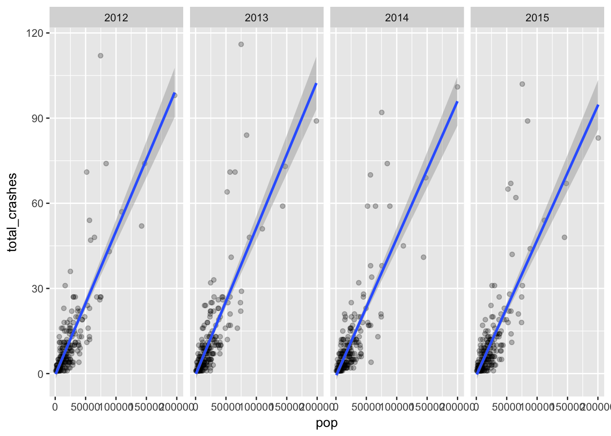
Here’s the rate per 1000 of total crashes vs. pop.
qplot(pop,total_rate,
data=dfa,
alpha=I(.25)) +
stat_smooth(method="lm") +
facet_grid(. ~ factor(year))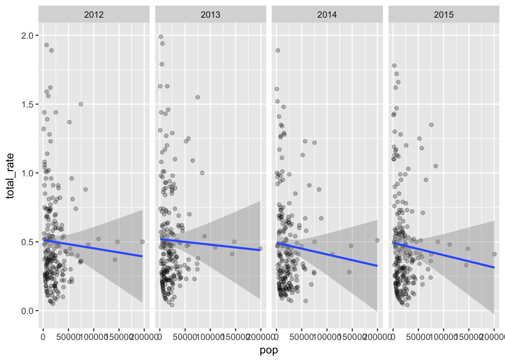
Places with higher populations do tend to have more crashes, but even within that expected result we can see places with higher than expected crashes. And when you look at crashes by rate per 1000, there’s generally a negative correlation with population.
Here’s number of injuries compared to crashes per 1000
qplot(cycle_rate,cycle_inj,
data=dfa,
alpha=I(.25)) +
stat_smooth(method="lm") +
facet_grid(. ~ factor(year))## Warning: Removed 109 rows containing non-finite values (stat_smooth).## Warning: Removed 109 rows containing missing values (geom_point).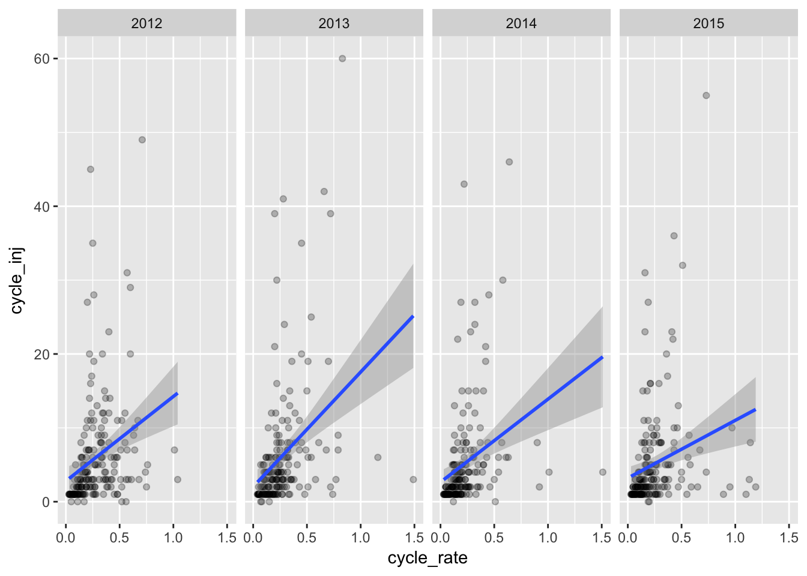
qplot(ped_rate,ped_inj,
data=dfa,
alpha=I(.25)) +
stat_smooth(method="lm") +
facet_grid(. ~ factor(year))## Warning: Removed 86 rows containing non-finite values (stat_smooth).## Warning: Removed 86 rows containing missing values (geom_point).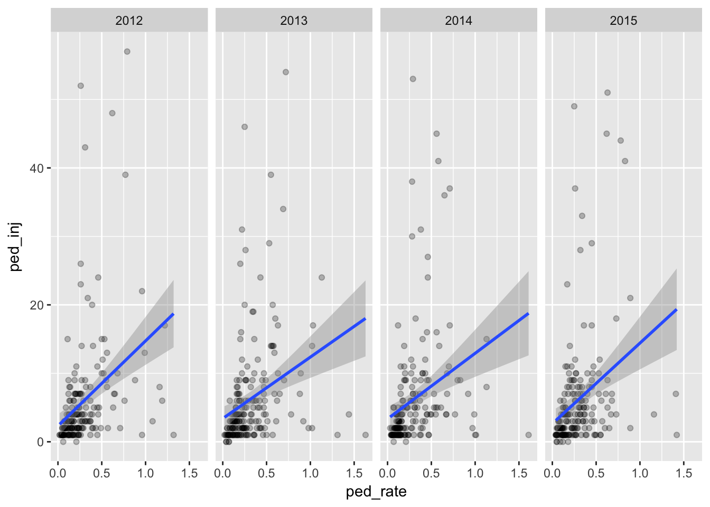
qplot(total_rate,total_inj,
data=dfa,
alpha=I(.25)) +
stat_smooth(method="lm") +
facet_grid(. ~ factor(year))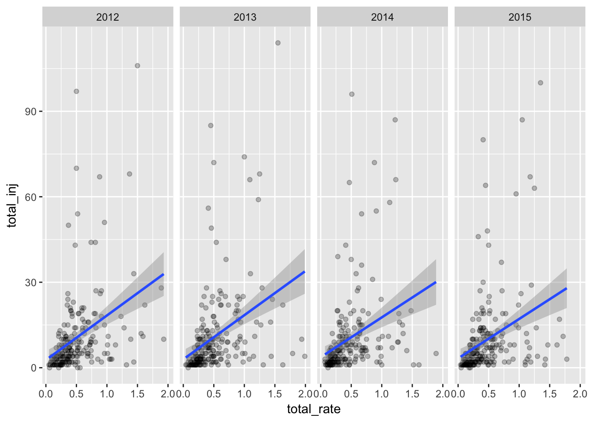
Generally it looks like the higher the crash rate, the more injuries - which could be assumed. But again, there looks to be many places with higher than expected injuries vs. their rate.
So it looks like it’s not only about population.